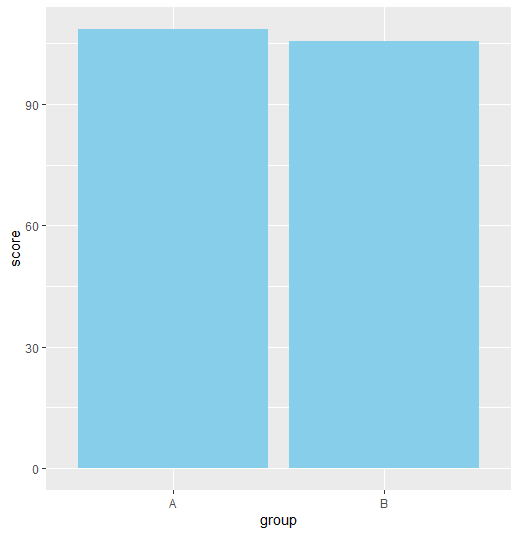
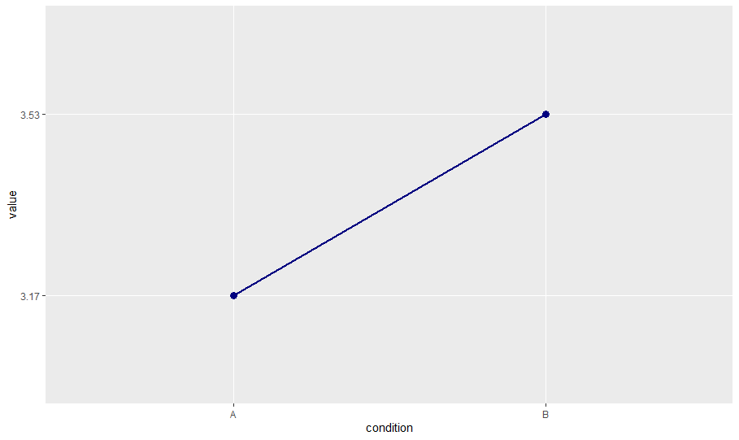

7 T-Tests
7.1 Learning Objectives
Know what a t-test is, and what kinds of research questions it can address.
Know what aspects of the data influence the size and significance of a t-test.
Know what a one-sample t-test is, and what questions it can address.
Know what a between-subject t-test is, and what questions it can address.
Know what a within-subject t-test is, and what questions it can address.
Know how to write the results of each type of t-test.
As we start learning about inferential tests, we’ll start with a simple question: How do we know that a mean is meaningfully different from another mean?
Take, for example, the (true) story of William Sealy Gosset, who worked for Guinness Breweries (yes, the same Guinness that still sells a very nice stout). Gosset was a chemist and brewer, and as you might imagine, he needed to conduct research to examine what aspects of the brewing process related to tastier beers. The problem was that he was limited to small samples, and he wanted to know whether small samples related well to the population. For example, if Gosset made a tweak to a recipe and found that it improved the tastiness of that beer by 1 point on a 10-point tastiness scale, would that translate to a meaningful improvement in how the population liked the beer? Because he only had access to relatively small samples, he wanted to know more about how big of a sample he would need to detect a difference that would meaningfully translate to the beer-drinking population. He paired up with Karl Pearson (who you’ll learn more about later) to devise a test to establish this. Because Guinness had proprietary information they didn’t want falling into the hands of their competition, Gosset was required to use a pseudonym, and he wasn’t allowed to share that his research was on beer. In the end, Gosset published a paper under the name Student (Student 1908), and this is where the Student’s t-test comes from.
In this chapter, we’ll be talking about three different types of t-test. But, at its most basic, a t-test tells us a ratio between the differences that are systematic differences between two groups, and the differences that are random noise.
7.2 One Sample T-Test
Let’s start with the one sample t-test. This test is used when you want to compare the mean of a single sample to that of a population – that is, we want to see if our sample is notably different from the general population. Consider, for example, a study by Clark and Stoner (2008) that investigated whether children who read braille spelled as well as children who read traditional books. In other words, is it reasonable for us to think that braille readers are similar to the general population in terms of spelling skills?
So, let’s dive into the math of this question. Here’s the formula for the one-sample t-test:
\[\text{t} = \frac{\mu - \bar{X}}{S_{\bar{X}}} \tag{7.1}\]
Hmm! This might look a little bit familiar to some equations we’ve seen before…
\(\text{z} = \frac{\bar{X}-X}{\sigma}\)
This equation looks a little similar to Equation 4.1, the equation for a z-score. With a z-score, we were trying to compare someone’s score to the rest of the sample. This is analagous to a t-test, but instead of looking at an individual and comparing them to the sample, we are looking at a sample and seeing how it compares to the population. I like to think of it as “scaling up” the same idea from one person to a group of people. You’ll also notice instead of using the population standard deviation ( \(\sigma\) ), we are using the standard error of the mean ( \(S_{\bar{X}}\), see Equation 3.1 ) . Why would we do this?
In this case, we don’t know the population standard deviation. That is something that exists only in Theoryland, and we would never actually be able to measure this directly. So, as I mentioned before, we need to estimate this value by using the standard error of the mean.
So, essentially, the t-test tells us the ratio between how big the difference is between two means (the population mean and our sample mean) compared to how much the data points spread out from that mean. Our t-value will be smaller when the difference between means is small, and/or when the standard deviation is really broad (i.e., there’s a lot of variance among the people in each group). Conversely, when there is a big difference between means, and/or when we have a narrow standard error of the mean (i.e., people in each group are very similar) our t-test value will be larger. And a larger test value is more likely to be significant, indicating that we are fairly confident the effect is not just something we found due to chance.
You can use the tool below to see how this relationship works.
[inset JS illustration of how this works]
In Clark and Stoner (2008) , braille readers had an average score of 99, compared to a population average of 100. We also know from their data that the standard deviation for the sample was 11.70, and the sample size was 23. So, we can plug in these values to get the t-test value itself:
\({S_{\bar X}} = \frac{11.70}{\sqrt{23}} = 2.44\)
\(\text{t} = \frac{\bar{100}-99}{2.44}=.41\)
This is quite a tiny t-test value! If you were doing your computations by hand, you’d need to compare this value with the critical t-test value on a t-table (Table 16.1) – if our obtained t-test value is lower in magnitude compared to the critical value, we conclude the difference is not significant. Here, our degrees of freedom are 22, and we are doing a one-tailed test with \(\alpha=.05\). According to the t-table, our critical t-value is so the critical t-test value is 1.71. Our obtained t-test value of .41 does not clear that bar, so we can declare this test non-significant, and that our sample likely doesn’t differ from the population.
(The good news is that we have software that can do these calculations for us, so we don’t generally refer to t tables anymore; instead, the software would indicate that the p-value is greater than our usual .05 standard cutoff for declaring something significant).
In other words, if we think of our t-test value as a ratio, we don’t see much of a difference between our sample mean and the population mean, and we see quite a bit of variation within our sample; the fact that our sample is one point lower than the population is very likely just due to random chance. (We can’t be 100% certain about this, though! It is certainly possible that we had a weird sample just by chance, so we might be making a Type II error… but we would never know if that was the case.)
So ultimately, the authors reasonably concluded that braille readers seem to be quite similar to other students in terms of their spelling skills, which seems like good news. Of course, it’s a small sample, so we would want to keep in mind whether this sample was representative, and whether the size of the difference is practically significant.
So, in conclusion, if you have a sample that you need to compare to some average in the population that you know already because you’re using some sort of standardized measure, the one-sample t-test is one possible approach to answering that question. It’s not the type of question that pops up a lot in the field, but it’s a good baby step into t-tests.
7.3 Between-Subject T-Test
A much more common test you’ll encounter is the between-subject t-test. Here, we have means from two separate samples, and we want to compare those means to see if they are significantly different.
As an example, let’s stick with spelling as a topic. Imagine that we have two randomly assigned groups of children who are learning how to spell. In one group (Group A), we show them only the correct spelling of a word. In the second group, we show them both the correct spelling, plus some common mistakes students make when they spell the word (Group B). We want to know whether these different instruction techniques lead to different scores on a spelling test.
In this case, the students are in completely different groups, and we’re testing their spelling scores only once. So, let’s say we obtain the following data (which you can also find in the file spelling between.csv):
| Group | Score |
|---|---|
| A | 113 |
| A | 112 |
| A | 110 |
| A | 109 |
| A | 109 |
| A | 108 |
| A | 106 |
| A | 105 |
| A | 103 |
| A | 111 |
| B | 112 |
| B | 110 |
| B | 108 |
| B | 107 |
| B | 105 |
| B | 104 |
| B | 105 |
| B | 104 |
| B | 104 |
| B | 104 |
| B | 104 |
| B | 103 |
| B | 107 |
| B | 105 |
| B | 104 |
You can see that within each group, there is some variance – we have some good and not-so-good spellers in each group. The question, then, is whether we can see a meaningful difference related to which instruction method they used. At a basic level, this question is quite similar to the one-sample t-test, but we’re replacing the population mean with a sample mean.
However, there’s another issue here – you may notice that we don’t have perfectly balanced samples (there are a few more students in Group A) and the variances within each group are not perfectly equal. So, we need to make some adjustments to our t-test formula to make it work for this situation:
\(t = \frac{\bar{X_A}-\bar{X_B}}{\sqrt{(\frac{s^2_p}{n_A} + \frac{s^2_p}{n_B})}}\)
\(s^2_p = \frac{(n_A-1)s_A^2 + (n_B-1)s^2_B}{n_A +n_B -2}\)
Let’s break down what’s going on here. The numerator is not too different in this case from what we saw in Equation 7.1 – again, we are subtracting one mean from the other to see how different they are… that’s pretty straightforward. Also, it’s pretty arbitrary which group we put in as “Group A” versus “Group B,” so whether the t-test value is positive or negative doesn’t particularly matter.
But there’s a lot going on in the denominator! So, let’s break this down piece by piece. It actually is still a standard deviation, but we’ve needed to make an adjustment to it, because our two groups have different numbers of participants, and different standard deviations. So, we essentially need to weight each contribution the groups make to the standard deviation by multiplying those weights by their respective degrees of freedom (n-1). That is what the pooled variance ( \(s^2_p\) ) is doing. Then, we take that pooled variance and pop that value over the number of people in each group, and add those two values together. But remember that with a t-test, we need a standard deviation, not the variance, in the denominator. So, we have to take the square root of that final value.
Long story short, what this equation does is similar to what we saw with the one-sample t-test – the difference between means is in the numerator, and a standard deviation is in the denominator. This t-test value is what determines whether the difference between groups is significant.
So, as an illustration, let’s try applying this to our made up data set on spelling.
\(\bar{X_A}=108.60\)
\(\bar{X_B}=105.73\)
\(s^2_A=10.04\)
\(s^2_B=6.64\)
\(n_A=10\)
\(n_B=15\)
Using these values, we first calculate our pooled variance:
\(s^2_p = \frac{(10-1)10.04 + (15-1)6.64}{10+15 -2}=7.97\)
And then we apply that value to our t-test equation:
\(t = \frac{108.60-105.73}{\sqrt{(\frac{7.97}{10} + \frac{7.97}{15})}}=2.49\)
Again, if you are using statistical software, the program should provide you with a significance value. But just for clarity’s sake, you can also use Table 16.1 to find the critical t value; a two-tailed test with \(\alpha=.05\) and 23 degrees of freedom gives us a critical t of 2.07. Because our obtained t-test value is larger than this, we can conclude this is a significant difference. In other words, our results indicate that the group that saw the incorrect spelling did markedly worse than the other group, possibly because when it came time to take the test, the students had a hard time remembering which was the correct versus incorrect spelling. So, we have an answer to our question about what technique works best for students.
7.3.1 What to do if your assumption of normality and/or homoscedasticity are violated
The good news is that t-tests are typically quite robust against violations of this type. However, if you have concerns about the normality or homoscedasticity of your data, you can apply what’s called a Welch’s correction. This correction doesn’t use pooled variance, but keeps variances separated in the denominator. It also makes an adjustment to the degrees of freedom for the test – specifically, it reduces the degrees of freedom to account for the increased uncertainty of the test. Ultimately, the correction raises the critical t-test value, making it slightly less likely that you’ll obtain a significant result. Most of the time, the results won’t differ by much, and in fact, some social scientists recommend using the Welch test even if you don’t have issues of normality or heteroscedasticity @Delacre et al. (2019). If you do use a Welch correction, you should report it in your write up, and adjust the degrees of freedom and the t-test result accordingly.
7.3.2 Calculating an Effect Size for Between-Subject T-Tests
As mentioned in Section 5.6, effect sizes can be helpful to convey the practical significance of the results, especially in cases where your sample size is small. To calculate effect size as a Cohen’s d, we can use the following equation:
\(\text{d}= \frac{\bar{X_A}-\bar{X_B}}{\sqrt{s^2_p}} = \frac{108.6-105.73}{\sqrt{7.97}}= 1.01\)
This suggests that there is about about one standard deviation that separate the group means – that’s a fairly large effect, so it shouldn’t be surprising we found a significant difference with such a small sample size.
7.3.3 Writing the Results of a Between Subject T-Test
When sharing the results of a between-subject t-test, you want to convey several pieces of information to your audience:
What type of t-test you are doing;
What the average scores are for each group and their accompanying standard deviations;
The t-test score, its degrees of freedom, and its significance;
In some cases, the effect size
If you used a Welch correction, you should indicate that.
So, for this example, here’s an example of how I might write up the results:
In condition A, students scored an average of 108.60 (SD=3.17) on the spelling test, while they scored an average of 105.73 (SD=2.58) in condition B. A two-tailed between-subjects t-test indicated a significant difference, t(23)=2.49, p=.021. This represents a fairly large effect size (d=1.01).
As a writer, you have lots of flexibility in how you might write this aside from using the correct notation for your test, so here’s another way someone might write this:
Results of a two-tailed independent t-test indicated that students did better in condition A (M=108.60, SD=10.04) than they did in condition B (M=105.73, SD=3.17); this difference was significant and represented a large effect size, t(9)=2.79, p=.021, d=1.01.
If I applied a Welch correction, I could simply say “a Welch test” instead of “a t-test”. You will also find that you usually have decimals in your degrees of freedom, so make sure to include those in your notation reporting the Welch test. For example:
A Welch t-test indicated a significant difference between groups, t(16.61)=2.38, p=.029
Results can also be conveyed through graphics – a bar graph is typically the easiest way to communicate t-test results graphically.

7.4 Within-Subject T-Test
The final type of t-test you’ll encounter is the within-subject t-test. This test has a lot of different names, depending on the nature of the research you’re doing. In many cases, this t-test is used if you are testing participants twice, like with a pre-test and a post-test to see if there’s been improvement after a treatment or intervention; this is often called a repeated measures t-test or a dependent t-test. In some research contexts, it might not be feasible to assess people with both a pre- and post-test, so sometimes participants are matched on a characteristic, and are given the two different conditions and assessed on their outcome. Because they were matched ahead of time, they likely are similar and so they can be treated the same in terms of how they respond to two different treatments. This is known as a matched-sample t-test, but mathematically, all of these different t-tests are the same. The main difference here is that the two scores share some relationship, so we can’t treat this as a between subject sample, where we assume the scores between groups are independent of one another.
We can take our example from the last section and re-design it as a within subject t-test. So, in this case, we might teach our students some words using only the correct spelling, and have them take a spelling test on those words (Condition A). We then teach them some different words using the other technique of showing them both the correct and the incorrect spelling (Condition B). There are some methodological problems with doing it this way, but let’s not worry too much about that for the sake of this illustration.
So now, our data might look like this:
| Participant ID | Condition A | Condition B | Difference |
|---|---|---|---|
| 1 | 113 | 110 | 3 |
| 2 | 112 | 108 | 4 |
| 3 | 111 | 107 | 4 |
| 4 | 110 | 105 | 5 |
| 5 | 109 | 104 | 5 |
| 6 | 109 | 100 | 9 |
| 7 | 108 | 102 | 6 |
| 8 | 106 | 108 | -2 |
| 9 | 105 | 101 | 4 |
| 10 | 103 | 101 | 2 |
The way we think about comparing scores is a little different here. Now, we are interested in differences between scores for each person. You’ll notice in the table there is an extra column that subtracts the score for Condition B from Condition A; this is known as a difference score. If there was no effect at all, we’d expect the difference score to be zero, and as the difference score changes in magnitude, we have more confidence that our conditions are different. Here, we can see that participant 6 stayed the same, and participant 8 did better in Condition B, but for the most part, we see that scores for Condition A tend to be higher than Condition B. Of course, we need to statistically test these findings to be sure! Here’s the equation for a within-subject t-test:
\(\text{t}= \frac{\bar{D}-0}{\frac{S_D}{\sqrt{n}}}\)
Where \({\bar{D}}\) is the average difference score, and \({{S_D}}\) is the standard deviation of those difference scores. We find that the average difference score is 4.0, and the standard deviation of differences is 2.83, so:
\(\text{t}= \frac{4.00-0}{\frac{2.83}{\sqrt{10}}}=4.47\)
The critical t-score for this test is 2.26, so the difference is clearly significant in this case; students see a significant drop in scores if they use a technique that shows them mistakes than if they don’t see mistakes.
There are a couple additional points worth noting here. First, imagine that we had one unusually poor speller in the group. Let’s say that participant #10 has a score of 3 in Condition A, and a score of 1 in Condition B – so, they are about 100 points lower than most students. However, because we are interested in the change in scores, the value in the difference column wouldn’t change, nor would the standard deviation of difference scores. We essentially throw away the variance between participants in this equation. We don’t really care if participants are different from one another, we just care whether their scores change in a systematic way. This also means that this test is more powerful than a between-subjects t-test. If we take these same scores and treat them as if they are in a between-subject test: :::{#tbl-betweenspell}
| Group | Score |
|---|---|
| A | 113 |
| A | 112 |
| A | 111 |
| A | 110 |
| A | 109 |
| A | 109 |
| A | 108 |
| A | 106 |
| A | 105 |
| A | 103 |
| B | 110 |
| B | 108 |
| B | 107 |
| B | 105 |
| B | 104 |
| B | 100 |
| B | 102 |
| B | 108 |
| B | 101 |
| B | 101 |
We would find a t-score of about 3.00. This value is significant, but not nearly as large in magnitude as the 3.97 we found when we treated the data as within-subject. So, you don’t need as many participants or as much data with a within-subject test as you do with a between-subject test to detect a difference. There are many reasons why it might be nonsensical or impossible to use a within-subject design for your research, but if it is possible, it is worth considering, especially if you are limited on resources or participants.
7.4.1 What to do if your assumptions are violated
The good news here is for within-subject t-tests, we don’t need to worry about heteroscedasticity (I’ll explain more on this in Section 9.1). As for normality, we don’t worry about normality in the measures themselves, we worry about normality in the difference between those values. So, you would need to calculate the difference scores and look at whether that was normal. This test is fairly robust, so minor issues with normality are not a concern, but if you have an outlier, you might want to explore alternatives, such as a Yuen’s test (which is not available on all software) or a non-parametric test such as a Wilcoxon Signed-Rank test (Park 2020).
7.4.2 Calculating an Effect Size for Within-Subject T-Tests
There are several ways of writing up a within-subject t-test, so if you are curious, you can check out Kline (2004) for a review. The most straightforward test is known as Cohen’s d, which is where you take the difference over the standard deviation. So, in this case:
\(\text{d}= \frac{\bar{D}}{{S_D}} = \frac{4.00}{2.83}=1.41\)
As we learned in Section 5.6, this is quite a large effect. Cohen’s d is one of the most popular measures of effect size, but it is not considered the most accurate, so you can read Kline (2004) to learn about the Hedge’s correction, which often shows up in some statistical software as an alternative to Cohen’s d.
7.4.3 Writing the Results of a Within-Subject T-Test
When sharing the results of a within-subject t-test, you want to convey several pieces of information to your audience:
What type of t-test you are doing;
What the average scores are for each testing period/condition and their accompanying standard deviations;
The t-test score, its degrees of freedom, and its significance;
In some cases, the effect size
So, for this example, here’s an example of how I might write up the results:
In condition A, students scored an average of 108.60 (SD=3.17) on the spelling test, while they scored an average of 104.60 (SD=3.53) in condition B. A two-tailed within-subjects t-test indicated a significant difference, t(9)=4.47, p=.001. This represents a fairly large effect size (d=1.41).
Just as for the one-sample and the independent t-test, you have some flexibility over how you write your results, as long as you get the statistical notation right. Bar graphs and line graphs tend to be the most common way to convey the results of this test graphically.
